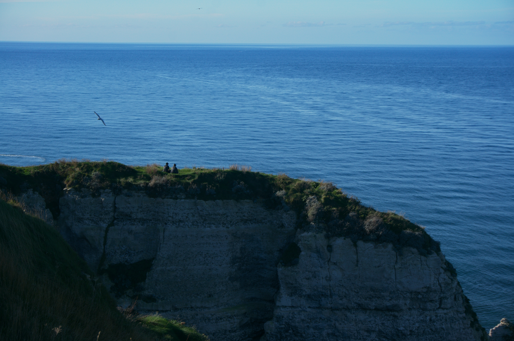
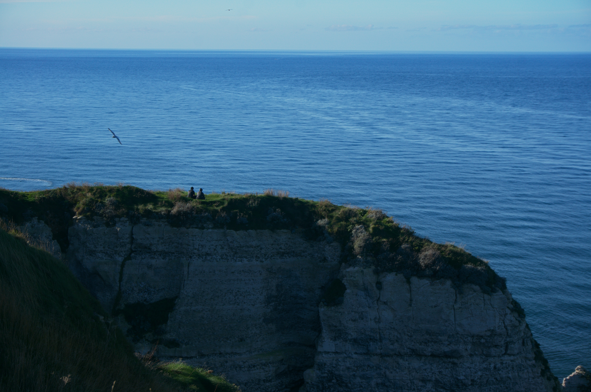
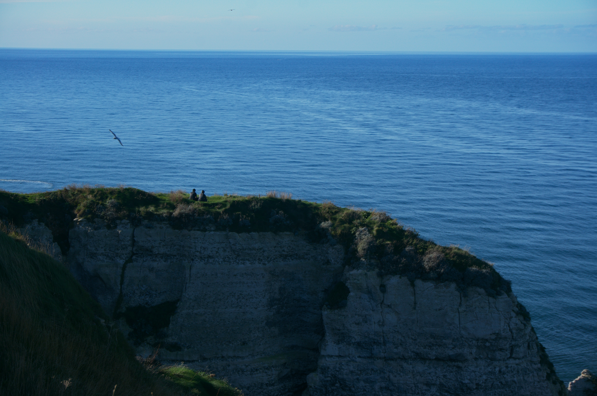
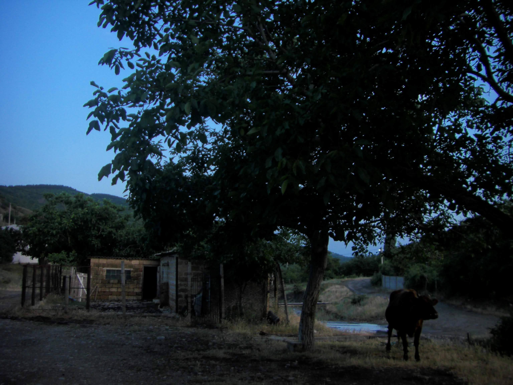
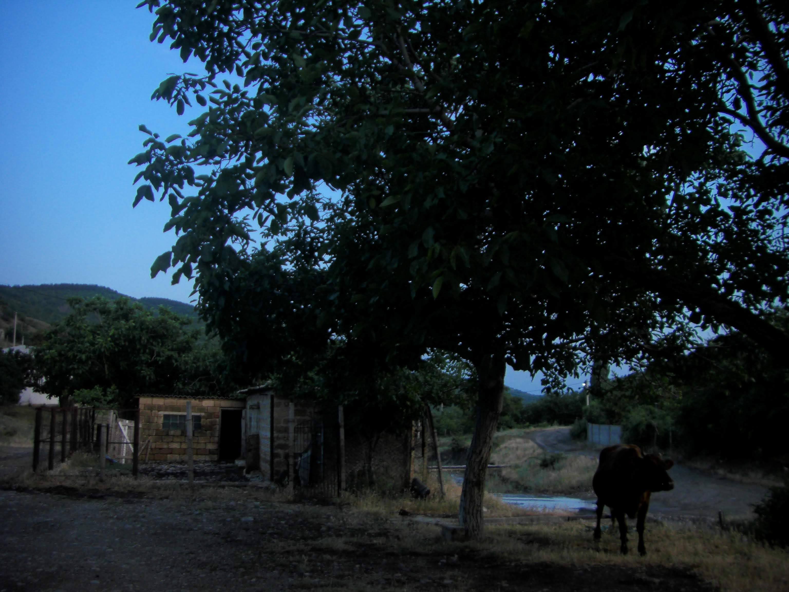

PROFESSIONAL CAMERA
High-quality shots taken with my main photography gear.

 

I’m passionate about capturing moments - whether through my almost-professional camera, my ever-handy mobile phone, or my beloved vintage analog camera. Each tool tells stories in its own way, and here’s a glimpse of those worlds.
High-quality shots taken with my main photography gear.

Spontaneous captures with my phone - proof that great moments don’t wait for the big camera.
Shot on my old-school film camera, with all its quirks and magic.


 
